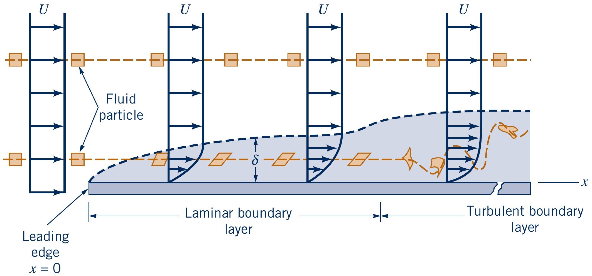
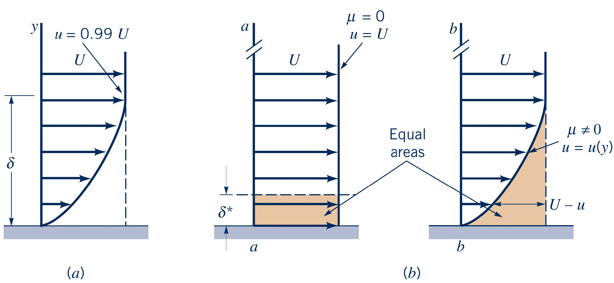
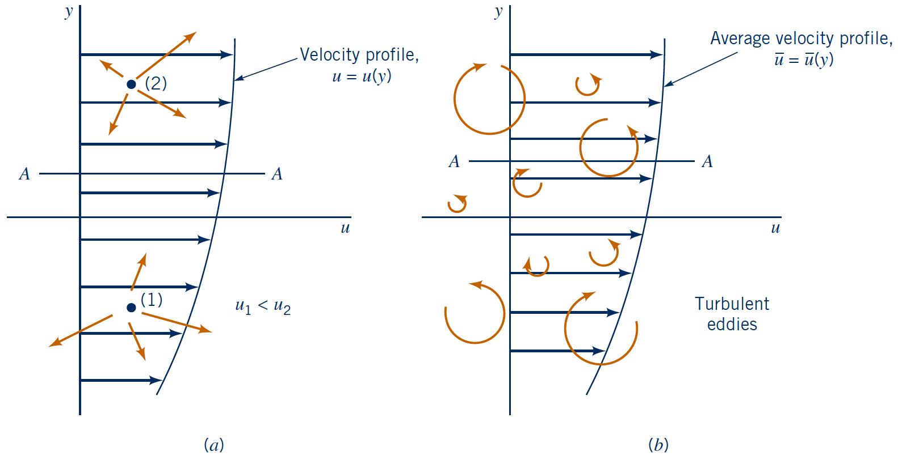
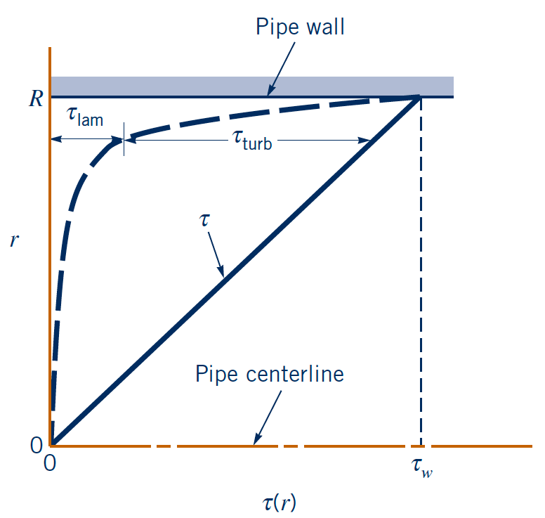
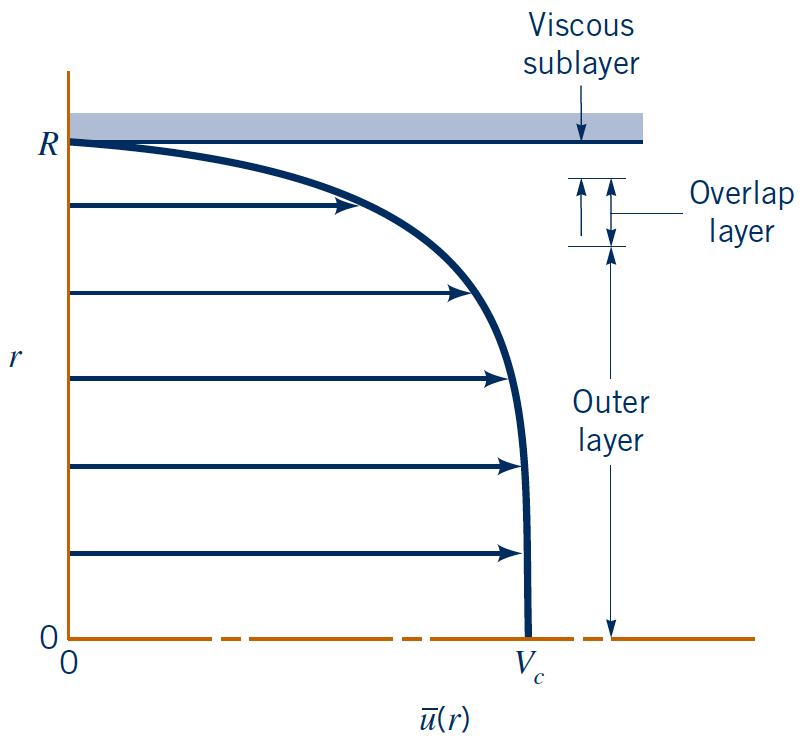
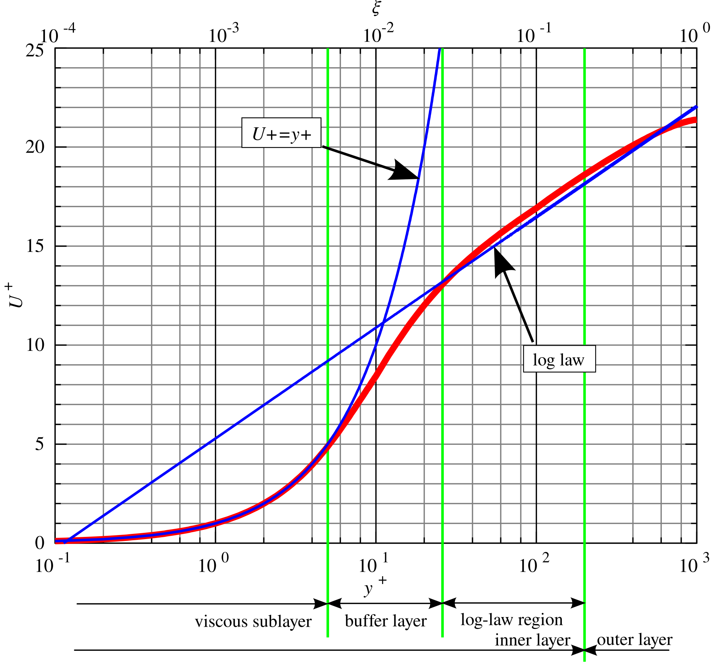

Fluid Mechanics
Boundary layers
Lecturer: Jacob Andersen
Slides by Jakob Hærvig (AAU ENERGY) and Jacob Andersen (AAU BUILD)
Boundary Layer Structure
Boundary layer (BL) structure and development for parallel flow over an infinite flat plate
- Only fluid in BL "feels" the plate
- $\text{Re}_x = \rho U x / \mu$ (bulk flow definition)
Laminar BL: Analytical expressions from Blasius BL solution
Turbulent BL: Mostly empirical expressions

Boundary Layer Thickness
BL thickness definitions:
- Standard BL thickness $\delta_{99}=\delta$
- BL displacement thickness $\delta^*$
- BL momentum thickness $\Theta$

Parallel flow to an (almost) infinite flat plate
Excellent experiment showing turbulent BL triggered by trip wire in this classical flow case
- Note: Friction Reynolds number $\text{Re}_\tau=\frac{\rho \ \sqrt{\tau_w/\rho} \ \delta }{\mu}$ (local) rather than bulk Reynolds number $\text{Re}_x=\frac{\rho \ U \ x}{\mu}$ is used in video
Turbulent Shear Stress
Recall how the instantaneous (horizontal) velocity $u$ could be decomposed into a time-averaged and fluctuating part (Reynolds decomposition):
$$u(x,y,z,t) = \overline{u}(x,y,z) + u'(x,y,z,t)$$
- Tempting to apply our Newtonian shear stress definition directly to $\overline{u}$ in turbulent BL
- However, $\tau \neq \mu \frac{d\overline{u}}{dy}$ (with turbulence)
Let us review the underlying physics:
- Laminar BL
- Molecular diffusion
- $x$-momentum transfer in $y$ due to $\frac{du}{dy} \neq 0$ → Shear stress
- Turbulent BL
- Finite size 3-D eddies
- Increasing momentum transfer
- Extra term in shear stress: $$\tau = \mu \frac{d\overline{u}}{dy} - \rho \overline{u'v'} = \tau_{lam} + \tau_{turb}$$

Reynolds Stresses
The additional contribution to shear stress from fluctuations $\tau_{turb} = -\rho \overline{u'v'}$ has units of Pa and is termed Reynolds stresses.
- These stresses are flow dependent and difficult to describe
- Fluctuating velocities influence the mean flow
- Boussinesq hypothesis: $$\tau_{turb} = -\rho \overline{u'v'} = \mu_t \frac{d\overline{u}}{dy}$$
- Shifts the problem from Reynolds stresses to $\mu_t$ (flow dependent scalar)
- The basis of widely used RANS and URANS turbulence models
- Typical ratio of $\tau_{lam}$ and $\tau_{turb}$ in turbulent BL varies with distance to the wall (here for a pipe flow)


Turbulent Velocity Profile
- Dimensionless $y$ coordinate: $y^+ = y u^* / \nu$ with $u^* = \sqrt{\tau_w / \rho}$
- Dimensionless velocity: $u^+ = \overline{u} / u^*$
- Viscous sublayer ($y^+ < 5$)
- Viscous forces dominant over Reynolds stresses
- Smooth wall: $u^+ = y^+$
- Buffer layer ($5 < y^+ < 30$)
- Both viscous sublayer and log law important (transition function)
- Log-law layer ($30 < y^+ < 200$)
- Velocity varies as the logarithm of $y$
- Experimentally determined (law of the wall): $$u^+ = \frac{1}{\kappa} \ln(y^+) + C^+$$
- Where $\kappa$ is the von Kármán Constant: $\kappa=0.41$ and $C^+ = 5$ (for smooth walls and flow over infinite flat plate)
- Viscous sublayer extremely thin
- Roughness of the wall can enter viscous sublayer $\rightarrow$ changed $u(y)$

Pressure Gradients and Boundary Layers
Flat plate: uniform outer flow does not yield a pressure gradient (streamlines negligibly deformed).
Bluff or curved body: changing outer streamlines cause a pressure gradient along the surface.
- Favorable: pressure decreases and the outer flow accelerates.
- Adverse: pressure increases and the outer flow decelerates.

Inviscid Flow Around a Circular Cylinder
Inviscid theory can give a solution for the pressure distribution and drag on a circular cylinder.
- The free-stream speed is zero at the front and rear stagnation points, and maximum at the top and bottom of the cylinder.
- The inviscid pressure distribution is symmetric from front to rear.
- With no viscosity there is no wall shear, and the symmetric pressure forces cancel:
$$\mathcal{D}=0$$
- Would we expect this from common experience?


Viscous Flow Around a Circular Cylinder and d'Alembert's Paradox
Adding viscosity introduces viscous effects and a finite drag can be measured (as we would expect).
However, what happens when $\mu$ approach zero?
d'Alambert's paradox unfolds:
$$\mu=0 \; \Rightarrow \; \mathcal{D}=0 \qquad\text{but}\qquad \lim_{\mu\to 0}\mathcal{D} \neq 0$$
Great mystery in fluid mechanics for more than a century - solved by Prandtl by accounting for viscous effects in thin BL.
Viscous Flow Around a Circular Cylinder and d'Alembert's Paradox
For practical $\mathrm{Re}$, we expect $\delta \ll l_{\mathrm{char}}$ and the BL does not greatly affect the entire flow.
- Therefore, we can reuse the inviscid solution to approximate the wall-tangential and wall-normal pressure gradients in the viscous BL.
- Recall that a fluid particle in the BL experience first a favorable pressure gradient, then an adverse pressure gradient.
- For the inviscid solution, the total energy was constant and the particle balanced its pressure and kinetic energy as it travelled in the BL.
- However, in reality, viscous effects dissipate energy as heat and the particle cannot overcome the adverse pressure gradient.
- The particle slows down (kinetic energy deficit in figure), then stops, and ultimately reverses direction: the BL separates from the surface.
- A large wake of constant, low pressure is formed behind the separation point, and the drag is dominated by this under-pressure.
- Separation causes the drag!


Delay of Separation from Turbulence
Turbulence can delay separation:
- Later separation point
- Reduced wake size
- Decreased drag
A bowling ball dropped in water illustrates the difference: a smooth surface supports a largely laminar boundary layer, while roughness can trigger turbulence and delay separation.